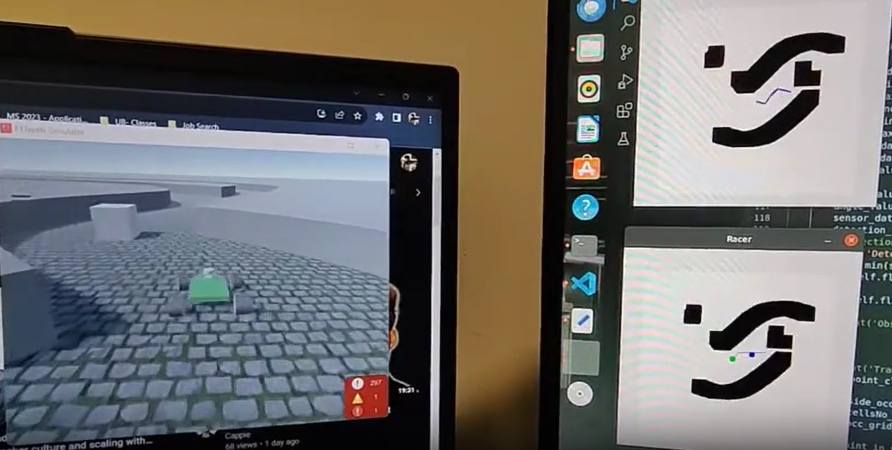

Autonomous Racer- F1Tenth
Perception Planning and Control for Autonomous Vehicle
{kind=link}

Links
Introduction
This is an autonomous racing algorithm designed to navigate a vehicle through a predefined track using various sensors and path planning techniques. The project leverages ROS (Robot Operating System) to handle communication between the vehicle and its sensors, including LiDAR, IMU, and odometry. The primary goal of the project is to achieve efficient and collision-free navigation using techniques such as Pure Pursuit for path following and RRT (Rapidly-exploring Random Trees) for obstacle avoidance.
A Typical F1Tenth Car:
Simulator View:
Approach
This algorithm follows a hybrid approach combining two main techniques:
- Pure Pursuit: This method is used for following the track's centerline. The algorithm computes the necessary steering angle to keep the vehicle on the desired path.
- RRT (Rapidly-exploring Random Trees): When an obstacle is detected on the track, the algorithm switches to RRT-based path planning to navigate around the obstacle and return to the track.
RRT Demonstration:
Pure Pursuit:
Reference: Pure Pursuit
Algorithm Steps
1. Sensor Data Collection
- LiDAR Data: Collect distance measurements from surrounding objects.
- IMU Data: Gather orientation and angular velocity data.
- Odometry Data: Track the vehicle's position and velocity.
2. Data Processing
- Polar to Cartesian Conversion: Convert LiDAR data from polar coordinates (angle and distance) to Cartesian coordinates (x, y).
- Occupancy Grid Creation: Create a 2D occupancy grid from the Cartesian coordinates to represent the environment around the vehicle.
- Object Dilation: Inflate the detected obstacles in the grid to account for the vehicle's width.
- White Halo Creation: Add a white halo around the vehicle to prevent it from getting trapped inside obstacles.
3. Path Planning
- Initial Lookahead on Centerline: Continuously check ahead along the track's centerline to determine if there are any obstacles within the lookahead distance.
- Path Planning Decision:
- No Obstacle Detected: Perform Pure Pursuit on the centerline.
- Obstacle Detected:
- Determine Target Point: Identify a target point on the centerline that lies beyond the detected obstacle.
- Path Generation with RRT:
- Generate multiple paths using RRT from the vehicle's current position to the target point.
- Each path should be checked to ensure it does not collide with any obstacles in the occupancy grid.
4. Path Selection
- Evaluate Paths:
- Smoothness Criterion: Calculate the cumulative angles of each generated path to determine its smoothness.
- Length Criterion: Measure the length of each path.
- Optimal Path Selection: Choose the path that is both the smoothest (with the least cumulative angles) and the shortest.
5. Control Commands
- Pure Pursuit Control:
- Lookahead Distance: Determine the lookahead distance based on the vehicle's speed.
- Target Point Identification: Identify the point on the desired path at the lookahead distance.
- Steering Angle Calculation: Compute the required steering angle to reach the target point.
- Dynamic Speed Adjustment: Adjust the vehicle's speed based on the steering angle and obstacle proximity. Use an exponential function for speed adjustment to ensure smooth control.
RRT Repo: https://github.com/imalhotra15/RRT
Tips and Tricks
- Object Dilation: Expanding obstacles in the occupancy grid ensures the vehicle maintains a safe distance from obstacles.
- White Halo: Adding a white halo around the vehicle prevents it from getting trapped inside obstacles, aiding the RRT algorithm in finding valid paths.
- Speed Control: Adjusting the vehicle's speed based on the steering angle and obstacle proximity improves stability and safety.
Demo
The video demo showcases the algorithm in action, demonstrating its ability to navigate a track, detect and avoid obstacles, and seamlessly switch between Pure Pursuit and RRT for efficient path planning.
Conclusion
This project demonstrates a robust approach to autonomous racing using a combination of Pure Pursuit and RRT algorithms. By integrating sensor data, implementing advanced data processing techniques, and employing strategic tips and tricks, the algorithm achieves efficient and collision-free navigation. This project serves as a valuable foundation for further advancements in autonomous vehicle navigation and control.
Notes
This was done as a part of the coursework of CSE 568 at the University at Buffalo. The source code is not available publicly to avoid academic integrity violations. Please feel free to contact the author if you wish access to the source code.